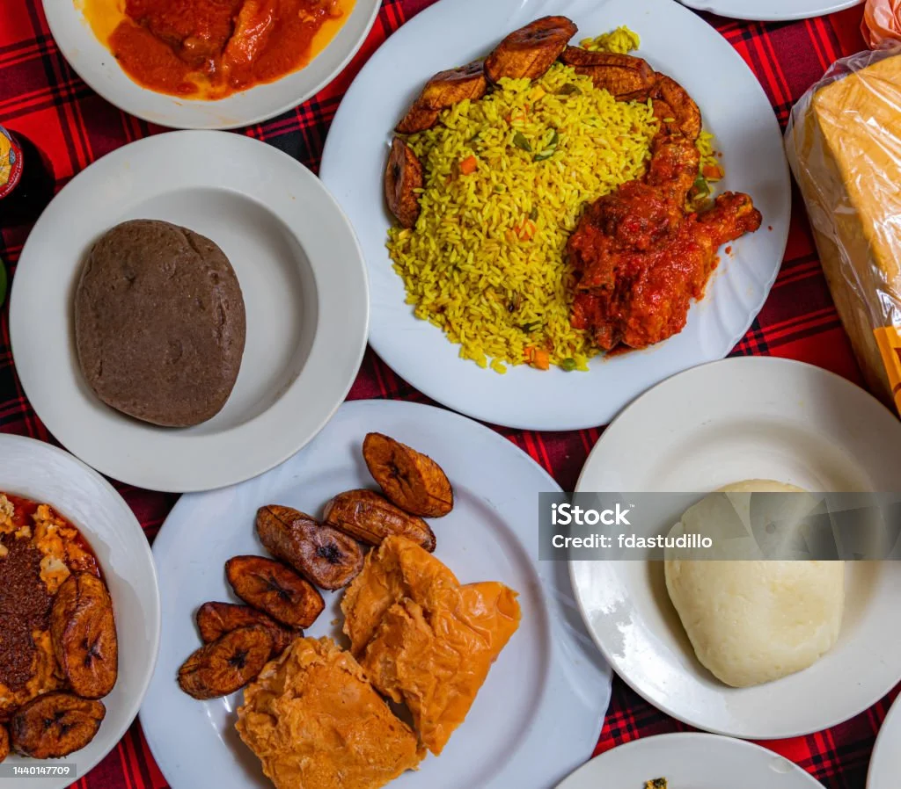

Welcome to Ghanaian Culinary Heritage
Discover the richness of Ghana’s traditional foods, rooted in history and prepared with love.
Featured Dishes
- Jollof Rice: A spicy tomato-based rice dish loved across West Africa.
- Fufu & Light Soup: A hearty combo of pounded cassava and rich broth.
- Waakye: A rice-and-beans combo served with various sides and spicy sauces.
Our Mission
We aim to educate, celebrate, and preserve Ghanaian cuisine for all generations and global food lovers. Learn the history, the preparation, and the joy of every bite.